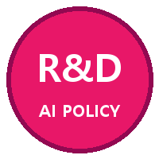
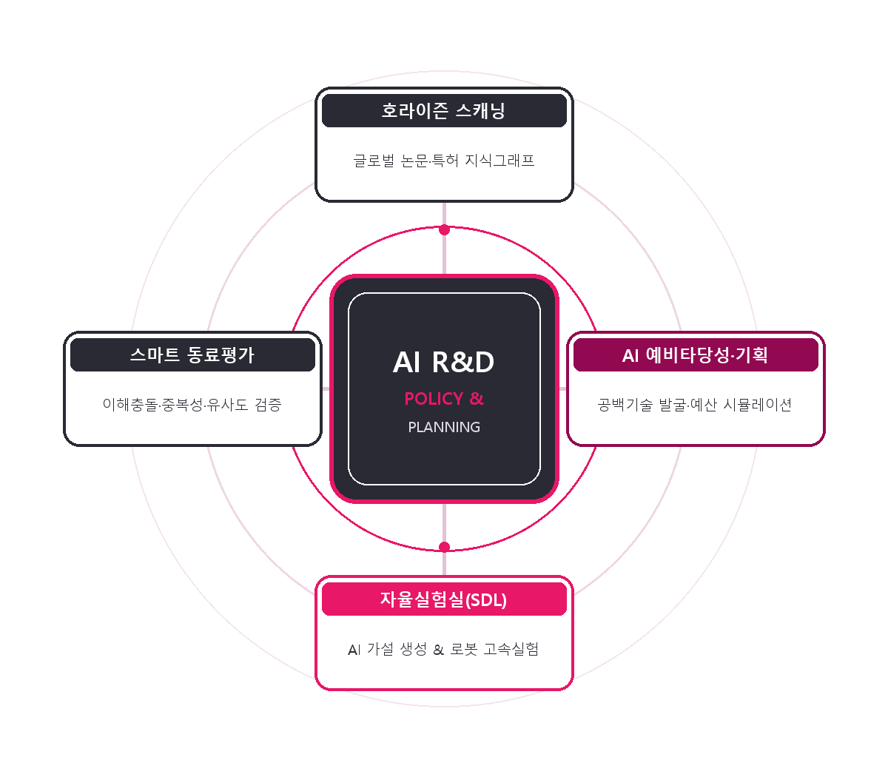
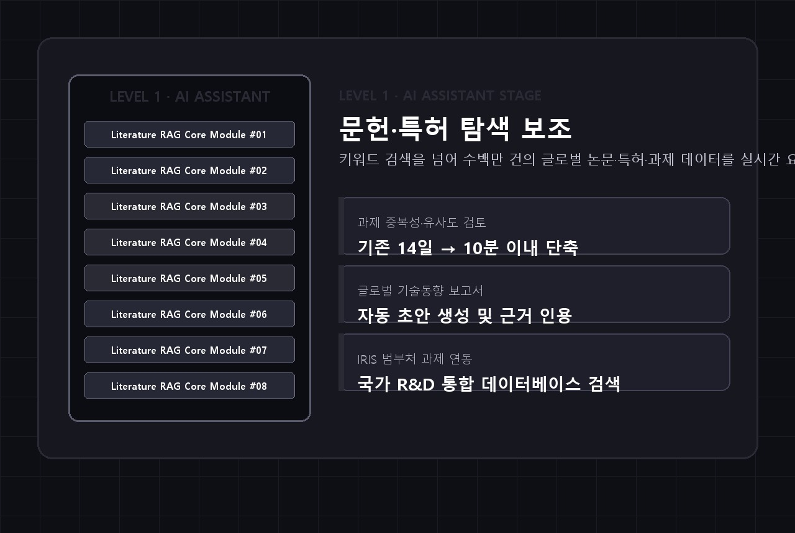
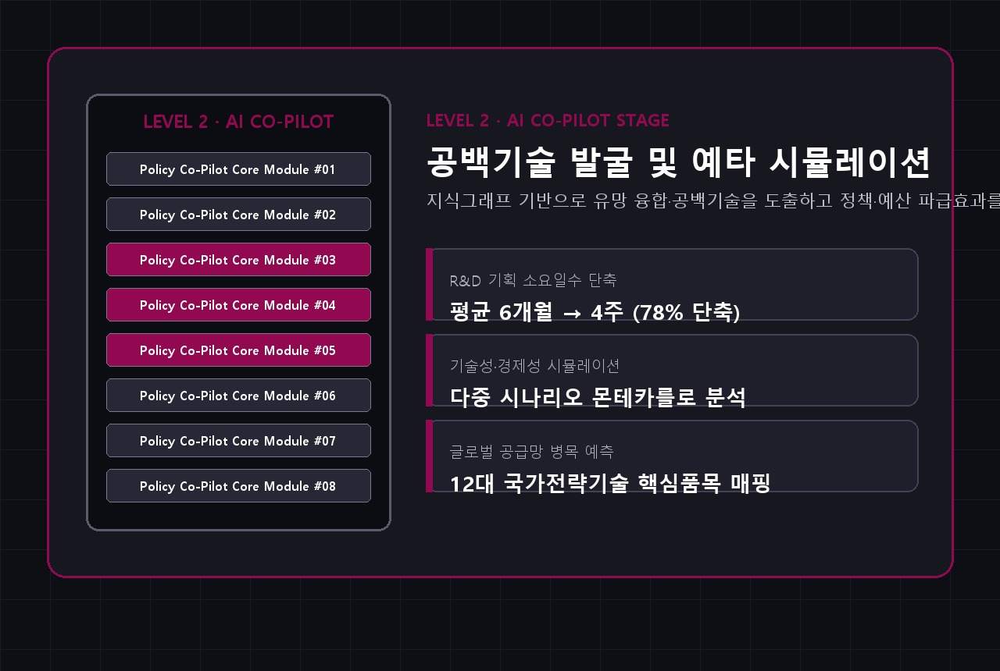
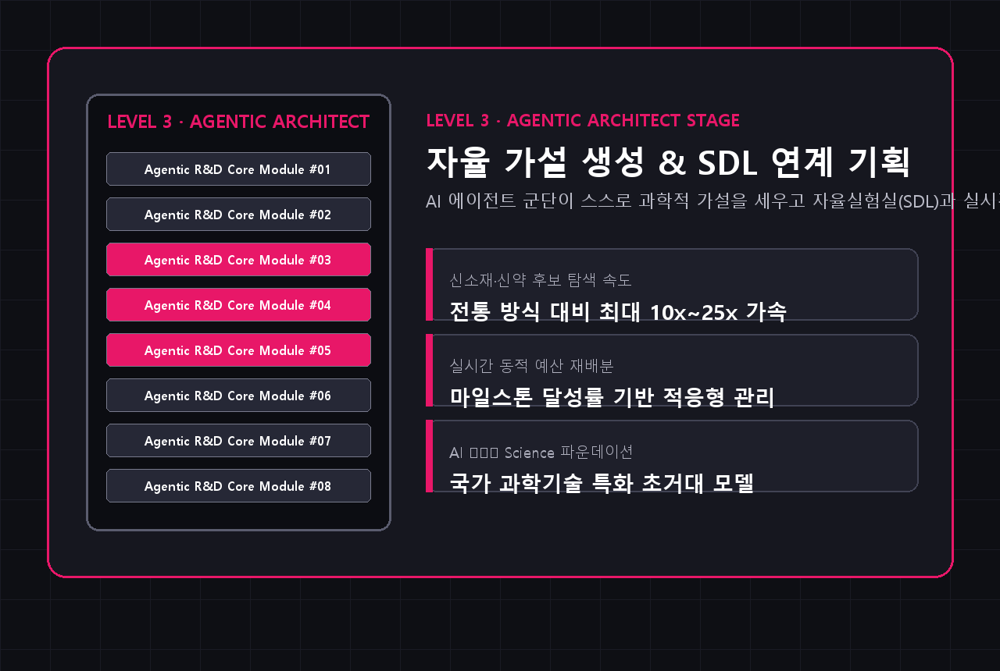
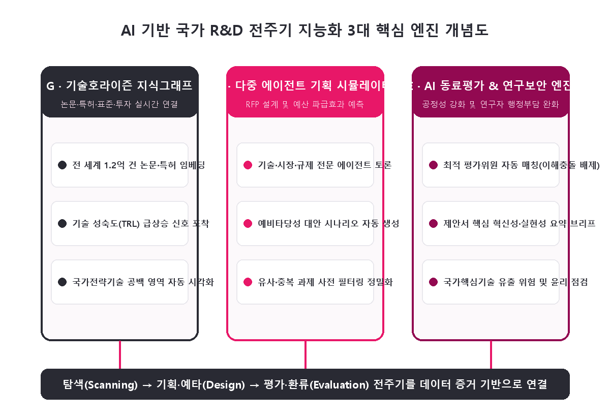
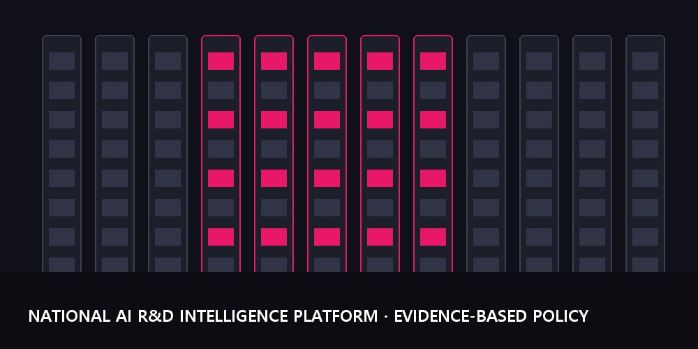

국가 연구데이터의 AI-Ready 표준화
출연연·대학에서 생산되는 연구데이터가 사장되지 않고 AI가 즉시 학습 가능한 표준 포맷으로 공유·자산화되는지 확인합니다.

AI 기반 국가 R&D 정책 · 15 SLIDESNATIONAL R&D POLICY & AI PLANNING
기술호라이즌 스캐닝, AI 예비타당성·RFP 설계, 자율실험실(SDL)까지
국가연구개발 전주기 지능화 전략을 15장으로 살펴봅니다.
2페이지에서 장표 크기로 15초 모션그래픽 영상 자동 재생 · 다음 장은 직접 이동
국가연구개발 중장기 투자전략 · 범부처 IRIS + AI 지능화 기준

POLICYNATIONAL R&D INVESTMENT
단순 나눠주기식 과제 대신 12대 국가전략기술·AI-반도체·첨단바이오와 기초원천 연구에 예산을 집중합니다.
부문 이름이나 막대를 눌러 세부 투자 내역을 확인하세요.
2026년 정부 R&D 총예산
부처·분야별 예산 구성 보기 ↗
전년(26.5조) 대비 +11.7% 확대
AI-반도체, 첨단바이오, 양자 등 3대 게임체인저와 12대 전략기술에 7.8조 원을 투입하며, 기획 단계부터 AI 데이터 분석을 의무화하고 있습니다.
급변하는 AI·첨단기술 속도에 맞춰 기존 2~3년 걸리던 예타 제도를 혁신하고 AI 기반 상시 기획·검증 체계를 도입합니다.
출처: 과학기술정보통신부 국가연구개발 예산 배분·조정안 및 중장기 투자전략 기준 · 조 원 단위 요약
THREE-YEAR R&D TRAJECTORY
2024~2026년 추이 · 연도를 누르면 정부 총 R&D 예산, 전략기술·AI 투자액, 기획 지능화 지표가 함께 바뀝니다.
2026년 지표 선택
2026년 정부 R&D
29.60조 원전년 대비 +6.1%
2026년 전략기술·AI
7.80조 원전년 대비 +21.9%
범부처 통합연구지원시스템(IRIS)에 AI 분석 모듈이 단계적으로 확대 적용됩니다.
2026년은 전략기술·AI 투자가 7.8조 원으로 확대되고, AI 기반 공백기술 발굴과 상시 기획 체계가 본격 가동되는 해입니다.
출처: 국가과학기술자문회의 심의자료 및 정부 R&D 예산안 재구성 · AI 기획 적용률은 범부처 IRIS 지능화 목표치 포함
OPERATIONAL INNOVATION
수작업 문헌조사와 위원 섭외에 걸리던 시간을 AI 지식그래프가 혁신적으로 줄여줍니다.
AI 도입 후 평균 R&D 기획 소요일
38일글로벌 논문·특허·시장 동향 조사와 기술수요서(RFP) 초안 작성을 AI 코파일럿이 실시간 지원합니다.
AI 기반 유사·중복 검증 및 위원 매칭 정밀도
94.2%단순 단어 일치가 아닌 문맥·방법론 임베딩 분석으로 실질적 중복 과제를 가려내고 최적 전문가를 추천합니다.
출처: KISTEP·KISTI 지능형 R&D 기획·평가 시범사업 및 글로벌 AI 정책 분석 리포트 종합
4-LAYER POLICY INTELLIGENCE
오른쪽 4계층 플랫폼 버튼을 누르면 계층별 정책 성숙도 지표와 핵심 기능이 함께 바뀝니다.
오른쪽 계층 항목을 선택하면 그래프에서 해당 계층이 강조됩니다.
범부처 IRIS 과제 정보, NTIS 성과 데이터, 해외 논문(OpenAlex·PubMed)·특허(USPTO·KIPRIS)를 실시간 파이프라인으로 단일 지식베이스에 통합합니다.
출처: 국가연구개발 데이터 통합 및 AI 지능화 아키텍처 참조 모델
FULL-CYCLE R&D ROADMAP
단계별 아이콘이나 소제목을 누르면 아래에서 상세 실행 계획 시트가 올라옵니다.
전주기 1단계 · 전략 탐색
소제목을 눌러 자세히 보기전 세계 프리프린트(arXiv·bioRxiv), 특허 출원, 글로벌 VC 투자 흐름을 AI로 실시간 추적해 급부상하는 태동기 기술을 선제 포착합니다.
12대 국가전략기술 분야별 조기경보 대시보드와 기술수준 평가 자동화
AI 분석 결과는 전문가 위원회(PD·PM)의 전략적 의사결정을 돕는 객관적 증거 자료로 활용되며, 최종 정책 결정 책임은 사람에게 있습니다.
출처: OECD STI Outlook & 범부처 국가연구개발 혁신방안 기반 전주기 AI 로드맵
AI R&D PLANNING SPECS
아래의 Assistant에서 위의 Agentic Architect까지 · 세로 레버를 움직이면 아키텍처와 사양이 바뀝니다.



Level 1 · Assistant진화 단계 선택
위로 올릴수록 고도화된 자율 기획
Level 1 · AI Assistant (탐색·요약 보조)
현재 즉시 도입 단계 · RAG 기반
국내외 R&D 데이터베이스를 시맨틱 검색(RAG)으로 연결해 선행기술 조사 시간을 90% 줄이고 기존 과제와의 유사·중복 여부를 10분 안에 판별합니다.
R&D 기획 소요일수 단축 효과 · Level 2 Co-Pilot
공백기술 도출부터 RFP 초안·예타 시뮬레이션까지 기획 주기를 78% 단축합니다.
출처: 범부처 R&D 기획 지능화 성숙도 모델(Lv.1~Lv.3) 및 US DOE AI for Science 기획 체계 비교
CORE AI ENGINES
오른쪽 엔진 이름을 누르면 화면 가운데에서 3단계 작동 원리와 정책적 효과를 볼 수 있습니다.

엔진 항목 클릭 → 3단계 작동 원리 팝업
서로 다른 역할(기술성·시장성·규제·예산)을 부여받은 AI 에이전트들이 기획안의 허점을 교차 검증하고 최적의 포트폴리오 대안을 도출합니다.
출처: GraphRAG 기반 기술기획 방법론 및 다중 에이전트 정책 시뮬레이션 아키텍처
R&D PRODUCTIVITY LEAP
과학기술 파운데이션 모델(AlphaFold·MatterGen 등)과 정책 AI의 결합이 국가 R&D의 투입 대비 산출 공식을 바꾸고 있습니다.
AI + 자율실험실 탐색 가속
신소재·신약·촉매 후보 발굴 속도 향상 배수
선진국이 이미 발표한 로드맵을 뒤따라가던 기획 방식에서 벗어나, AI가 아직 논문으로 출판되지 않은 구조적 공백 영역을 먼저 찾아내 선점 투자를 가능케 합니다.
도전적 R&D에서 실험이 실패하더라도 AI 학습용 고품질 실패 데이터(Negative Data)로 국가 DB에 축적하면 다음 과제의 성공률을 높이는 자산이 됩니다.
출처: OECD Artificial Intelligence in Science 리포트 및 주요국 AI for Science 실증 사례 종합
MISSION-ORIENTED PORTFOLIO
오른쪽 3대 투자 축을 선택하면 AI 정책 시뮬레이터가 권고하는 전략적 재원 배분 구조와 실행 방향을 볼 수 있습니다.
오른쪽 포트폴리오 축을 눌러 세부 정책 방향을 확인하세요.
글로벌 기술패권 경쟁과 공급망 블록화에 대응하기 위해 AI 공급망 분석으로 핵심 병목 기술을 식별하고 범부처 대형 플래그십 프로젝트로 집중 지원합니다.
출처: 국가전략기술 육성 기본계획 및 혁신도전형 R&D 추진전략 기준
SELF-DRIVING LABS & AI LOOP
기획된 R&D 과제가 실제 연구현장에서 AI 파운데이션 모델과 로봇 자동화로 고속 수행되는 닫힌 루프(Closed-Loop) 구조입니다.
수억 개의 화합물·단백질·결정 구조를 사전 학습한 AI가 목표 물성을 만족하는 최적 후보군을 몇 시간 안에 스크리닝하여 실험 범위를 좁힙니다.
소재·바이오·이차전지·반도체 분야에서 AI 자율실험실 인프라 구축이 급증하고 있습니다.
출처: 첨단소재·바이오 디지털 연구혁신 추진전략 및 글로벌 Self-Driving Lab 확산 동향
POLICY GOVERNANCE WATCH
화려한 AI 시스템 구축을 넘어
실제 연구현장 수용성과 평가 제도 혁신이 함께 가야 합니다.

출연연·대학에서 생산되는 연구데이터가 사장되지 않고 AI가 즉시 학습 가능한 표준 포맷으로 공유·자산화되는지 확인합니다.
알고리즘 편향이나 블랙박스 의사결정을 방지하고, 전문위원(PD·평가위원)과 AI 간의 명확한 역할 분담 가이드라인을 점검합니다.
기획 기간 단축이 부실 검증으로 이어지지 않도록 AI 기반 사전 타당성 시뮬레이션과 사후 마일스톤 관리가 작동하는지 봅니다.
발표자의 정책 제언 포인트 · 증거 기반(Evidence-Based) 국가연구개발 혁신
근거: 국가과학기술자문회의·과기정통부·KISTEP·OECD AI in Science 정책 보고서 종합
NATIONAL R&D VISION FILM
NATIONAL R&D POLICY BRIEFING
상단 '글자 편집' 버튼을 눌러 브라우저에서 직접 정책 수치나 문구를 수정하고,
모션그래픽 영상까지 포함된 단일 HTML 파일로 즉시 저장할 수 있습니다.
AI를 활용한 국가연구개발 정책 및 R&D 기획 · 15 SLIDES